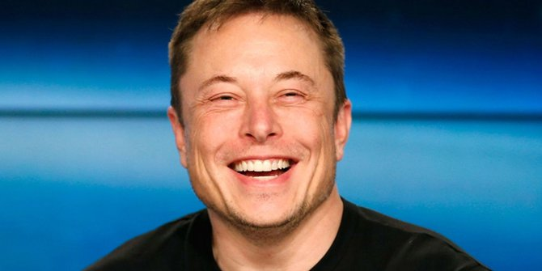

8 CEO Perusahaan Teknologi yang Tidak Mau Ambil Gaji
Hampir semua bos di dunia ini mengambil bayaran yang tinggi di perusahaan yang ia pimpin. Bahkan, banyak sekali pemimpin yang dikritik lantaran bayaran yang mereka ambil terlalu banyak tanpa memberi insentif sesuai bagi karyawannya.
Namun deretan bos di dunia teknologi ini, justru berbuat sebaiknya. Seringkali banyak sekali bos perusahaan yang mengambil gaji formalitas yang jumlahnya hanya sebsar 1 Dollar saja. Bahkan, banyak juga yang tidak mengambil gaji dan hanya berkiprah untuk memajukan perusahaannya.
Berikut deretan CEO perusahaan teknologi yang tidak mau ambil gaji, melansir Business Insider.
1. Larry Page and Sergey Brin, Google
Menurut pengarsipan tahunan dari Google yang dilakukan bersama Sekuritas dan Exchange Commision, Brin dan Page yang merupakan salah satu pendiri Google, gaji mereka hanya 1 Dollar per tahun sejak 2004 silam.
Jajaran petinggi Google pun menawari gaji dengan jumlah yang bersaing setiap tahunnya. Namun keduanya selalu menolak.
Bahkan, keduanya juga melepas bonus uang tunai yang berbasis kinerja individu sebagai hak setiap karyawan Google. Lebih jauh, keduanya juga tak memiliki berbagai jenis saham Google.
Meski demikian, kekayaan keduanya masing-masing bernilai 34,9 milyar Dollar untuk Page, serta 34,3 milyar untuk Brin.
2. Jack Dorsey, Twitter
Bos Twitter Jack Dorsey, adalah salah satu bos yang tak terima gaji. Menurut laporan keuangan Twitter tahun ini, Jack hanya menerima gaji 1,40 Dollar per tahun. Jack sendiri memiliki kekayaan bersih sekitar 5,4 milyar Dollar.
Bahkan Jack juga menolak kompensasi sebagai karyawan Twitter. Dalam arsip keuangan yang diajukan Twitter, Jack menolak kompensasi tahunan kinerja selama 2015, 2016, 2017, dan 2018. Secara keseluruhan ia hanya menerima 1,40 Dollar tersebut.
Business Insider sendiri melaporkan bahwa angka 1,40 Dollar sendiri adalah simbolis untuk menghormati jumlah 140 karakter yang dulu pernah jadi ciri khas Twitter.
3. Larry Ellison, Oracle
Berdasarkan laporan keuangan dari perusahaan teknologi komputer Oracle, sang bos eksekutif yang juga menjabat CTO (Chief Technology Officer) yakni Larry Ellison, hanya menerima gaji 1 Dollar saja. Ia menerima gaji dengan nilai ini sejak 2011.
Meski demikian, kekayaan bersihnya mencapai 56,9 milyar Dollar dan mendapatkan kompensasi melalui saham perusahaan yang diberikan kepadanya.
Dua orang petinggi lain di Oracle yakni Safra Catz dan Mark Hurd menerima gaji dengan nilai fantastis yakni 950.000 Dollar.
4. Elon Musk, Tesla dan SpaceX
Bos dari Tesla Motor Elon Musk juga salah satu yang tak menerima gaji. Menurut Business Insider, Elon yang memiliki kekayaan 19,4 milyar Dollar diharuskan oleh hukum negara bagian California untuk dibayar dengan upah minumin regional.
Meski demikian, sang CEO tidak menerima gaji ini. Di sisi lain, melansir laporan The New York Times, terdapat beberapa kompensasi tahunan di luar gaji dari Tesla Motor yang masuk ke kantor Elon yang hingga kini masih disengketakan.
5. Mark Zuckerberg, Facebook
Sejak 2013, Zuckerberg hanya menerima gaji sebesar 1 Dollar saja dari berbagai kinerjanya sebagai CEO Facebook.
Bonus tambahan dan kompensasi yang jadi haknya pun tidak dia ambil. Kekayaan yang ia peroleh murni dari kendali saham Facebook yang membuat harta bersih yang ia miliki mencapai 74 milyar Dollar yang membuatnya jadi salah satu bos teknologi terkaya saat ini.
Dalam tanya jawab di Facebook pada 2015 lalu, Zuckerberg menyebut bahwa "aku sudah menghasilkan cukup uang. Pada titik ini, aku hanya fokus untuk melakukan yang terbaik dengan apa yang kumiliki."
6. David Filo, Yahoo!

Selama bertahun-tahun, salah satu pendiri dan jajaran bos Yahoo! yakni David Filo, hanya menerima gaji sejumlah 1 Dollar saja.
Ia pun tak menerima kompensasi tambahan, dan tak berpartisipasi dalam program insentif ekuitas yang disediakan Yahoo untuk pejabat eksekutif lainnya. Kekayaan bersihnya mencapai 4,7 milyar Dollar.
7. Jeremy Stoppelman, Yelp
Salah satu website layanan review bisnis yakni Yelp, punya bos yang tak mengambil gaji. Sang CEO yakni Jeremy Stoppelman, secara gradual menurunkan sendiri gajinya. Mulai dari hanya mengambil 300.000 Dollar di 2012, 37.501 Dollar pada 2013, dan hanya 1 Dollar di 2014. Sampai saat ini, gajinya hanya 1 dollar saja.
Menurut laporan dari pertemuan pemegang saham dari Yelp, sang CEO disebut memilih untuk menerima gaji pokok hanya 1 Dollar sebagai bukti komitmen dan kepercayaan pada bisnis Yelp dan penciptaan nilai dalam jangka panjang situs tersebut.
Meski gaji pokoknya hanya 1 Dollar, ia total telah menerima lebih dari 5 juta Dollar dalam saham penghargaan dirinya sebagai eksekutif, serta sekitar 48.000 Dollar per tahunnya untuk kompensasi kinerja. Meski demikian, uang kompensasinya dilaporkan dihabiskan untuk menggaji asisten eksekutifnya.
8. Evan Spiegel, Snapchat
Saat Roy Plunkett mencoba menemukan varietas baru untuk chlorofluorocarbons, dia malahan menemukan isi kaleng kecil itu hilang dan menyisakan noda ketimbang gas. Penasaran akan hal itu, dia pun mencari tahu dan menemukan jika ada substansi baru yang dapat menjadi medium yang memiliki tingkat ketahanan panas tinggi.
9. Serbuk Pistol

Snapchat adalah perusahaan yang terhitung baru menjadi perusahaan go public yakni di 2017 lalu. Sang pendiri sekaligus CEO yakni Evan Speigel akhirnya menurunkan sendiri gajinya dari 500.000 Dollar ke hanya 1 Dollar saja.
Meski demikian, menurut laporan keuangan Snapchat, kekayaannya mencapai 3 milyar Dollar dan ia menerima pemasukan dari saham Snapchat per kuartal hingga 2020 mendatang.